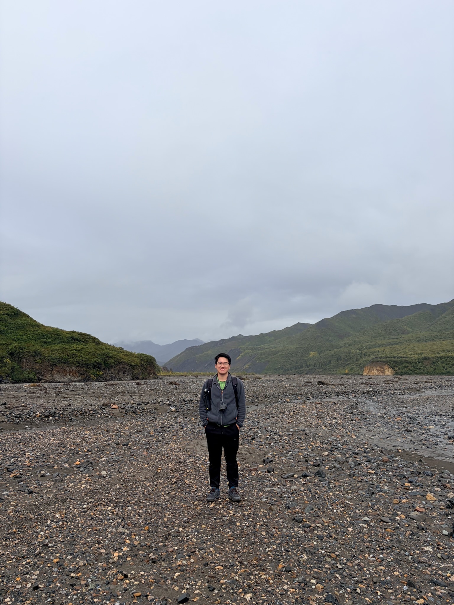

Hiking
I have loved nature since a young age. I love the feeling of being in the wilderness and away from the bustling city, and I especially love the feeling of being free in the wild. For this reason, I enjoy road trips and hiking. One day, I would love to hitchhike across the world!